歡迎來到 PHP雲端ERP 的世界
PHP 是開發 雲端ERP 應用程式的工具組。提供簡易的介面和邏輯結構來使用豐富的函式庫，其目的是讓你加 快開發速度。使用 PHP 只需要寫少少的程式，創造力可專注在專案開發。
雲端ERP 使用手冊目錄
貳、基本資料建立
一、基本資料管理系統之關聯作業
1.部門資料建立作業
■作業目的：依公司的組織架構賦予部門代碼，做為資料區隔管理及財務費用的歸屬。
■輸入畫面：
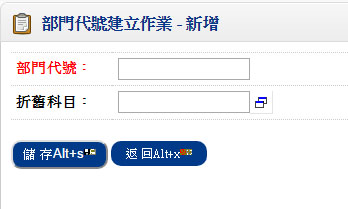- ■作業重點：
- 如無『固定資產管理系統』,折舊科目可不輸入;因折舊科目為當固定資產分攤方式依部門管理分攤時之科目依據
2.幣別匯率建立作業
■作業目的：本系統所使用到的所有幣別，先於本作業定義幣別代號及統一標準匯率。
■輸入畫面：
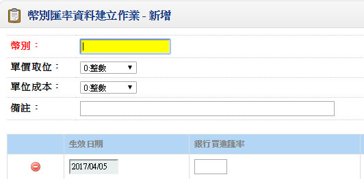- ■重要欄位說明：
- 單價取位
- 欄位不可空白，指的是訂單銷貨時及採購進貨時，此種幣別的取位方式，如訂單S$ 設為小數二位，當單價為4.536 時則會取位成4.54 元
- 金額取位
- 欄位不可空白，指訂單銷貨及採購進貨「單筆」金額的取位方式（單價×數量）
- 單位成本取位
- 欄位不可空白，指庫存單位成本的取位方式，目前只有台幣即「共用參數設定」中定義的本國幣別有意義，其餘沒有功能，一般而言均為小數二位
- 成本金額取位
- 欄位不可空白，指庫存成本的取位方式，用單位成本取位只有本國幣別有效，一般設定為整數
- 生效日期
- 欄位不可空白，指此筆匯率的生效期間，如果您有外幣管理在預設匯率時，系統將判生效日期的有效性
- 銀行買進匯率
- 訂單系統及應收帳款系統於打單時（報價單、客戶訂單、銷貨單、銷退單、結帳單）所用的預設匯率
- 銀行賣出匯率
- 採購系統及應付帳款系統於打單時（核價單、採購單、進貨單、退貨單、應付憑單）所用的預設匯率
- 報關買進匯率
- 出口系統所用的預設匯率
- 報關賣出匯率
- 進口系統所用的預設匯率
3.職務類別建立作業
■作業目的：生管／採購／業務／會計／出納職能群組人員建立，為了方便將來異動單據（訂單／銷貨單／採購單／…）的資料輸入，應於本作業中先行定義各大的職務職能之使用者。
■輸入畫面：
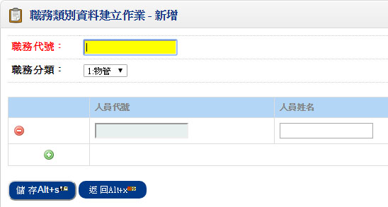- ■作業重點：
- 上線前務必將人員的工作職能先行定義，系統在資料處理時做了些許管制，例如：在訂單性系統，要查詢業務人員時，若未定義業務的使用人員，無法開窗，且無法輸入業務人員
- 以下關於各種人員的權責範圍
- 物管：領料單輸入
- 生管：製令開單人員
- 業務：報價單／客戶訂單／銷貨人員／收款人員
- 採購：採購單輸入／託外加工單的輸入
- 會計：傳票處理人員
- 出納六種：應收票據／應付票據／銀行存提作業處理人員
- 本系統允許同一個人扮演不同的角色
4.交易對象分類建立作業
■作業目的：為了強化客戶及廠商的分類及型態管理，本系統提供通路、型態、地區、國家、路線、其它、抽成、活動、廠商分類九種分類，可做為客戶及廠商型態的定義，針對九種分類可於本作業中再詳分細目，這些分類將來可做為銷售分析或相關統計報表的篩選條件。
■輸入畫面：
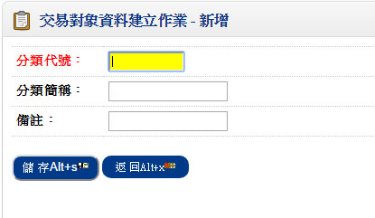- ■作業重點：
- 系統上線前請先規劃各種分類方式的編碼原則，並將現行所有客戶及廠商進行分類歸屬，以利「客戶資料建立作業」或「廠商資料建立作業」時相關資料的輸入
- 若基於產業別或客戶之管理，無需定義九種全部，可由使用者選擇重要的分類方式或管理的分類進行資料的建檔
5.註記/簽核資料建立作業
■作業目的：對於本系統所提供的憑證列印（核價單、採購單、採購變更單、進貨單、退貨單），是可由使用者自訂其簽核序程序（經理核准、主任核准、製表）及憑證表尾的註記，如進貨單上註明：此進貨單需經採購單位審核等。請先將常用的註記及簽核格式編碼於本作業建檔。
■輸入畫面：
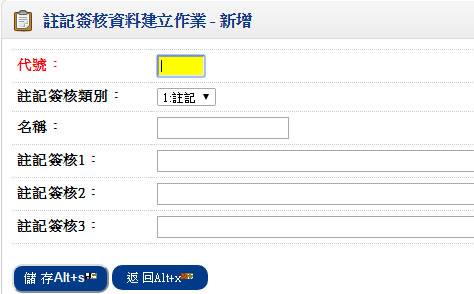6.付款條件建立作業
■作業目的：將廠商付款條件加以分類，依不同付款條件賦予代號，以便後續採購、進貨及應付憑單之篩選。
■輸入畫面：
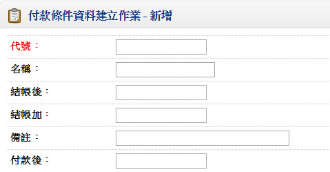二、採購管理系統之基本資料
1.廠商資料建立作業
■程式代號：PURI01
■程式名稱：廠商資料建立作業
■作業目的：採購供應商及託工加工廠商基本資料建立。
■輸入畫面：
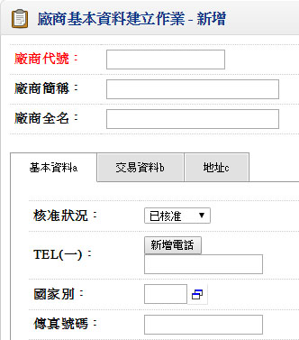 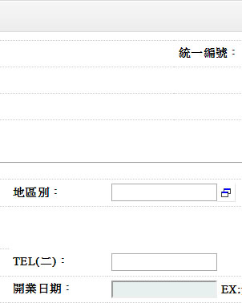▼
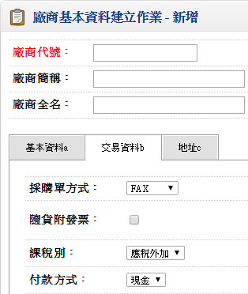 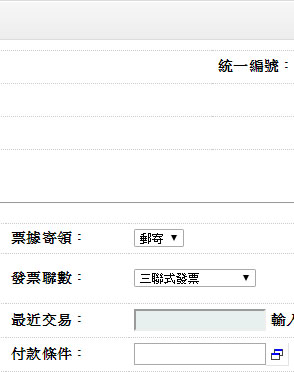▼
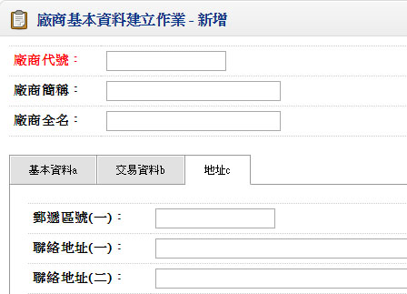- ■重要欄位說明：
- 核准狀況
- 供應商的交易狀況說明，註記欄位
- 1:已核准、2:尚待核准、3:不准交易
- 廠商分類
- 可空白
- 稅額計算方式
- 整張資料計算，即稅額以整張單據之金額計算稅額
如：一進貨單，A料金額為111元，B料金額111元，稅額則為11元 - 單身單筆資料計算，即稅額以單筆金額計算稅額
如：一進貨單，A料金額為111元，B料金額111元，稅額則為12元 - 允許分批交貨
- 預設為允許分批交貨，表示一採購序號，可分多次進貨
- 不允許分批交貨，指針對進貨單時，若該進貨單核對採購單，當輸入『驗收數量』時，
若驗收數量≧採購量則該採購單的結案碼更新為『已結案』
若驗收數量＜採購量則該採購單的結案碼更新為『指定結案』 - 最近交易
- 無須輸入，資料可由進貨單確認時（核准）更新
- 付款方式
- 註記欄位。計1.現金 2.電匯 3.支票 4.其他 四種
- 匯款銀行、匯款帳號、銀行名稱
- 若付款方式不為『電匯』，則不允許輸入或修改。輸入顯示『銀行名稱』
- 票據寄領
- 若付款方式不為『支票』， 則不允許輸入或修改
- 加工費用、應付帳款、應付票據科目
- 可空白，輸入時表示廠商加工費用.應付帳款和應付票據的明細科目代號，此科目不得為統制帳戶，一般應付科目如果區分到廠商別，則應於本欄位明定，如果只有一個彙總科目，則無須輸入
- 本欄位為自動分錄系統的資料需求欄位
- ABC 等級
- 可空白，可自行輸入，或透過本系統「廠商交貨ABC 分析表」的執行來更新
- 邏輯請詳「廠商交貨ABC 分析表」
- 交貨評等
- 可空白，可自行輸入，或透過本系統「廠商交貨／品質評等作業」的執行來更新
- 品質評等
- 可空白，可自行輸入，或透過本系統「廠商交貨／品質評等作業」的執行來更新
- 結帳日期
- 可空白，將來日期推算時為不存在日期則視為月底
- 例：驗收後__1_個月逢_30_日結帳。
表示：驗收日為880305 則結帳日期為880430
2.品號廠商建立作業
■程式代號：PURI02
■程式名稱：品號廠商建立作業
■作業目的：採購品之廠商別供應品號的約定價資料建立。
■輸入畫面：
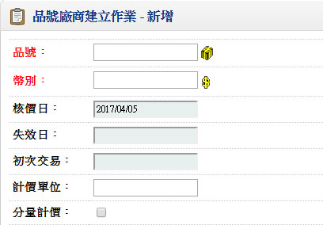- ■重要欄位說明：
- 品號
- 不可空白，品號廠商資料不可重複
- 廠商品號
- 註記欄位
- 核價日
- 可空白，若本資料可由單據設定為更新核價之核價單或採購單或進貨單確認時來更新時，單據的日期即為核價日
- 生效日
- 不可空白，資料如果由核價單而來，則生效日為核價單單身的生效日期
- 失效日
- 可空白，資料如果由核價單而來，則生效日為核價單單身的生效日期
- 計價單位
- 不可空白，必須為品號資料的換算單位
- 修改時，如果品號為雙單位，則計價單位不可以修改
- 分量計價
- 不可空白，預設非分量計價，非分量計價者，單身資料不可輸入
- 所謂分量計價，是定義不同進貨數量時，供應商提供不同的單價以優惠客戶
- 含稅
- 此定義的單價是含稅價格，此定義將來影響採購單或進貨單預設單價的金額
- 例如：單價為100元，非含稅，若採購單為含稅價格，則採購單價系統將自動換算為105元
- 採購單價
- 此欄位必須大於等於0
- 初次交易日
- 可空白，由第一筆進貨單來更新
- 上次進貨日
- 可空白，由最近一筆進貨所更新
3.單據性質設定作業
■程式代號：PURI04
■程式名稱：單據性質設定作業
■作業目的：採購系統所使用的單據如核價單、請購單、採購單、進貨單及退貨單之單據代號及性質。
■輸入畫面：
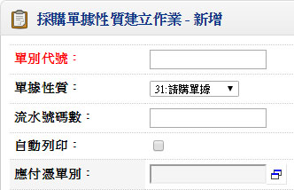 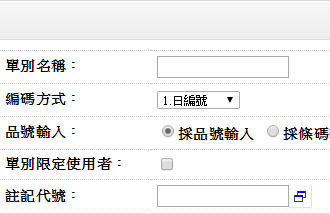- ■重要欄位說明：
- 單別
- 不可空白，不可重複，關於編號原則及建議請詳作業重點說明
- 單據性質
- 不可空白，系統設計時定義的性質代號為：
31.請購單據 32.核價單單據 33.採購單據 34.進貨單據 35.退貨單據 - 編碼方式
- 不可空白，提供四種編號原則，1.日編 2.月編 3.流水號4.手動編號
- 在設計採購單時請注意，採購單若透過「生產計畫系統」之「採購計畫發放作業」產生或者透過本系統的「請購資料更新作業」產生時，該採購單單據之編碼方式不得為「手動編號」
- 年碼數
- 編碼方式為日編或月編才需輸入，其餘不可輸入且預設為零
- 日編或月編：年碼數須大於0
- 日編：年碼數＋4（4碼表MMDD）＋流水號碼數 不可大於11碼
- 月編：年碼數＋2（2碼表MM）＋流水號碼數 不可大於11碼
- 流水號碼數
- 流水號碼數須大於0
- 日編：年碼數＋4（4碼表MMDD）＋流水號碼數不可大於11碼
- 月編：年碼數＋2（2碼表MM）＋流水號碼數不可大於11碼
- 年碼數及流水號碼數輸完時，需show出編碼格式
例:YYMMDD999、YYMM99999、999999999、YYYYMMDD999（西元年四碼）、YYYMMDD9999（民國年三碼） - 品號輸入方式
- 計有兩種：I.採品號輸入、II.採條碼輸入
- 採品號輸入：輸入商品資料時（如採購單、銷貨單…），以品號為輸入基準
- 採條碼輸入：輸入商品資料時，以商品的條碼編號為輸入基準，選擇此輸入方式時，該商品必須於「商品資料建立作業」中輸入『條碼』資料。作業中輸入商品資料開窗乃以條碼為開窗索引基準
- 自動確認
- 單據的預設為非自動確認，直接確認的意思表示打完單據後，該單據馬上生效，對採購單而言，採購人員輸入採購單後，馬上會進入已採未交量；進貨單輸入後會庫存增加且進貨單生效
- 若單據輸入的人員與核准的人員不同，比如說核准的人員為採購課長，那單據分兩段生效，則自動確認為非
- 自動列印
- 單據輸入完後是不是馬上由印表機將打完的單據列印出來稱為【直接列印】
- 更新核價
- 僅對單據性質為"32.核價單單據""33.採購單據""34.進貨單據"可輸入，表示單據核准時（確認），該單據之單價資料是否要更新「品號廠商資料」
- 設定時若廠商交貨的品號有分量計價的管理需求，建議只『"32（核價單單據）"』設為更新核價
- 核對採購/製令
- 僅對單據性質為"34進貨單據"可輸入
- 輸入進貨單時，是不是沒有採購單不可輸入。若公司的制度為依採單收料者，則進貨單之單據設為核對採購
- 直接結帳
- 僅對單據性質為"34進貨單據""35退貨單據"，可輸入：
- 直接結帳
應付帳款的成立以『每一張』進貨單或退貨單或託外進貨單或託外退貨單（製令管理系統）為單元，單據核准同時即產生一張應付憑單，我們稱之為直接結帳。 假設在7/10，及7/20各別有一筆進貨單金額為10萬及 5萬，當進貨單設為直接結帳者，表示會產生兩筆應付憑單，7/10─10 萬，7/20─5 萬。（可於應付帳款管理系統中之「應付憑單建立作業」查詢） 設為即時結帳者一般為國外廠商，進口當時即成立應付帳款。 - 非直結帳＝批次結帳
廠商帳單是期間的彙總金額，使用者可指定一週或一個月為週期成立帳單，例如可將一個月內的進貨單在次月月初（或定期）成立一筆應付帳款。這些期間是可自行設訂 - 應付憑單
- 當設為【直接結帳】時，才須輸入此欄位且不可空白
- 應付憑單單別須單據性質為'71應付憑單單據’，且須此應付憑單單據性質中的編號方式不為手動編號者。輸入時顯示單據名稱
- 註記代號
- 可空白
- 表示單據憑證列印時，所採用的註記，資料輸入時必須存在於「註記／簽核分類」中資料
- 列印時修改註記
- 對於先前所設單據註記代號，在憑證列印時可不可以修改
- 簽核代號
- 可空白
- 表示單據憑證列印時，所採用的註記，資料輸入時必須存在於「註記／簽核分類」中資料
- 列印時修改簽核
- 對於先前所設單據註記代號，在憑證列印時可不可以修改
- 每頁列印合計
- 對於列印超過一頁以上的憑證，是否需每頁皆列印合計
★注意！
有即時結帳需求時，「應付憑單」單據之編號方式不可為手動編號